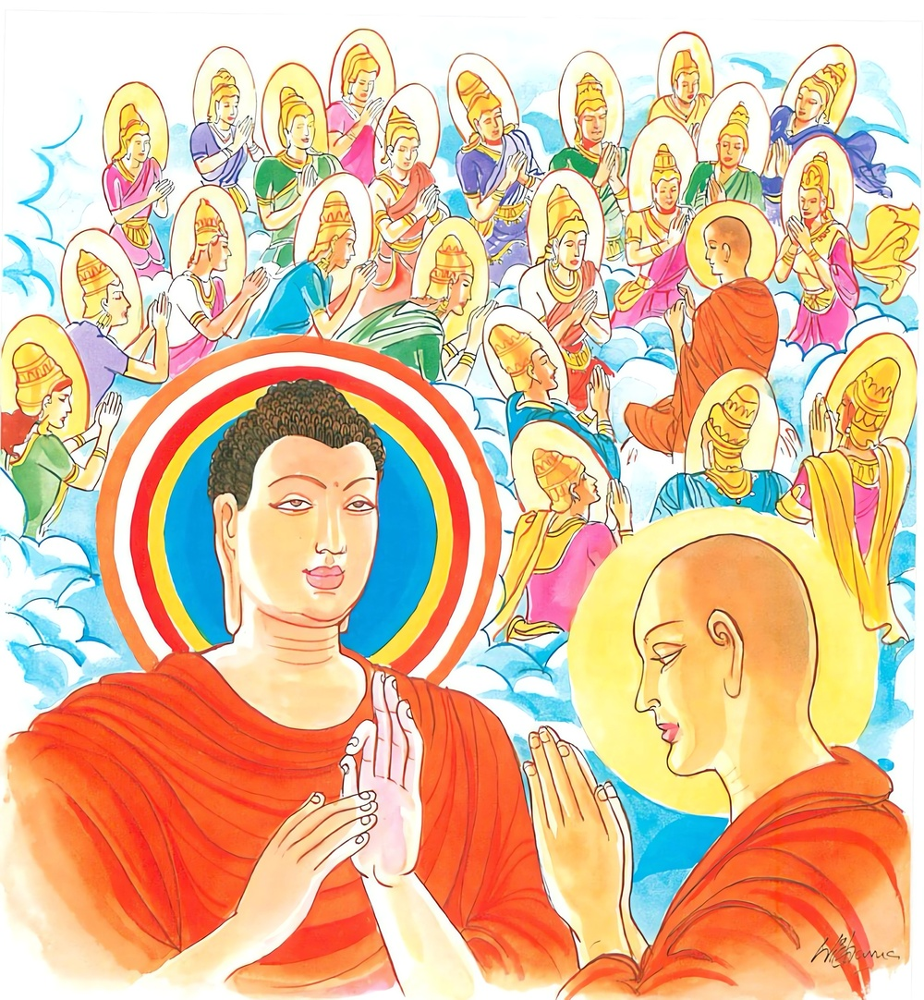

17-4 ගැහැණියකට දෙව්ලොව උපතට කරුණු වූ පින්කම
මෙම කතාව ධම්මපද අටුවාවෙන් ද කියවන්න.
සච්චං භණෙ න කුජ්ඣෙය්ය දජ්ජාප්පසමිම්පි යාචිතො
එතෙහි තීහි ඨානෙහි ගච්ඡෙ දෙවාන සන්තිකෙ.
සත්යය ම කියන්නේ ය. නො ම කිපෙන්නේ ය. ඉල්ලන ලදුයේ, දෙන දෑ ස්වල්ප වැ ඇති කල්හි නමුදු, එයින් මඳ දැයක් නමුදු දෙන්නේ ය. මේ කරුණු තුනින් දෙවියන් වෙතට යන්නේ ය.

එක් කලෙක මහමෞද්ගල්යායන මහාස්ථවිරයන් වහන්සේ චාරිකා පිණිස දෙව්ලොවට වැඩ එක් මහෙශාක්ය දෙව්දුවකගේ විමන් දොර වැඩ සිටි සේක. ඒ දෙව්දුව ඒ වේලෙහි උන්වහනසේ වෙත පැමිණියා වැ එකත් පසෙක්හි සිටියා ය. එ කල්හි මහා මෞද්ගල්යායන මහාස්ථවිරයන් වහන්සේ ඇය අමතා, “එම්බා දෙවිඳු! තීගේ සම්පත් මහත් ය, කිනම් කුශල කර්මයක් කොට මේ මහත් සැපත ලද දැ?”යි අසා වදාළ සේක. ඕ තොමෝ මේ මහත් සැපත ලැබීමට තමන් කළ කුසලය ඉතා සුලු බැවින් එය කීමෙහි ලජ්ජිත වූවා “ස්වාමීනි! මෙහිලා මා නො විචාරණු මැනැවැ”යි කිවු ය. “කළ කුසලය කියන්නැ”යි නැවැතත් වදාළ විට “ස්වාමීනි! මෙය ලැබීමට මා කළ ලොකු කුසලයෙක් නැත, දනක් පිණක් නො කෙළෙමි, බණ දහමක් නො ඇසීමි, පූජාවක් ද නො කෙළෙමි, කෙළෙම් බොරු නො කීම ය, එක ද බොරුවකුත් මොන කරුණක් නිසා වත් නො කීමි, මේ මහත් සැපත ලැබීමට කරුණු වූයේ සත්ය වචන මාත්රය”යි කියා සිටියා ය.
ඉක්බිති මහා මෞද්ගල්යායන මහා ස්ථවිරයන් වහන්සේ එපමණකින් නො නැවතී තව තවත් දෙව් විමන් කරා වැඩි සේක් උන්වහන්සේ දැක ඉදිරියට පැමිණි අන් දෙව්දූන් අතින්ද උනුන් කළ පින්කම් ඇසූහ. ඒ දෙවඟනෝ ද කළ කම් මෙසේ පැවැසූහ. එක් දෙව්දුවක් “ස්වාමීනි! කියන්නට තරම් පින්කමක් මම නො කෙළෙමි, දනක් නො දුනිමි, ස්වාමීනි! කසුප් බුදුරජානන් වහන්සේ කාලයෙහි මම අන්හු අයත් දැස්සක් වීමි, මාගේ ස්වාමි තෙමේ චණ්ඩ ය, පරුෂ ය, මා දුටු විට මූණ රළු වෙයි, අතට ගන්නේ යමක් ද එයින් පහර දෙන්නේ ය, කැටින් මුගුරෙන් ගසා ඔලුව පළන්නේ ය, මේ නිසා කෝපය උපන්නේ ද, මම ‘මෙතෙමේ තීගේ ස්වාමියා ය, තිට අධිපති ය, තී ඔහුට යටත් ය, මා මරාවා, නාස් ඈ කපා හරීවා, තළාවා, පෙළාවා, ඔහු කෙරෙහි නො කිපෙව’යි තමාට ම අවමන් කොට ගෙණ කිසිදාකත් කෝප නො කෙළෙමි, ඒ පිණෙන් ඒ මෛත්රියෙන් මා විසින් මේ සැපත ලදැ”යි කිවු ය. අන් දෙව්දුවක් “ස්වාමීනි! මම උක්කෙතක් රකින්නී ක් මහණක්හට උක්දඬුකඩක් දුනිමි”යි ද, අන් දෙව් දුවක් “මම තිඹිරි ගෙඩියක් දුනිමි”යි ද, අන් දෙව්දුවක් “මම කැකිරි ගෙඩියක් දුනිමි”යි ද අන් දෙව්දුවක් මම මූල පලා මිටක් දුනිමි”යි ද, අන් දෙව්දුවක් “කොසඹ කොළ මිටක් දුනිමි”යි ද මෙසේ තම තමන් දුන් දන් දන්වා “මේ කාරණයෙන් අප විසින් මේ සැපත් ලදැ”යි ඒ හැම දෙන කියා ලූහ.
මහාමෞද්ගල්යායන මහස්ථවිරයන් වහන්සේ පෙරළා මිනිස් ලොවට වැඩ බුදුරජානන් වහන්සේ වෙත එළැඹියහ. එළැඹ “ස්වාමීනි! ඇත්ත කීම් පමණකින්, තරහ සන්සිඳවා ගැණීම් පමණකින්, ඉතා සුලු තිඹිරිගෙඩි ඈ දීම් පමණකින් දෙව් සැපත් ලැබිය හැකි දැ?යි ඇසූහ. “මුගලන! ඇයි; මාගෙන් මෙසේ අසනු; තමුසේට මේ සියලු තොරතුරු ඒ ඒ දෙව්දූන් විසින් කියන ලද්දේ නො වේ දැ?”යි අසා වදාළ කල්හි මෞද්ගල්යායන මහා ස්ථවිරයන් වහන්සේ “ස්වාමීනි! එසේය, සුලු පින් කමිනුත් දෙව්සැපැත් ලැබිය හැකි බව සිතමි”යි කීහ. ඉක්බිති බුදුරජානන් වහන්සේ “මුගලන! ඇත්ත පමණකුත් කියා කිපීම් පමණකුත් හැර පියා ඉතා සුලු දනක් පමණකුත් දීලා දෙව්ලොව උපදිති”යි වදාරා මේ ධර්මදේශනාව කළ සේක.
සච්චං භණෙ න කුජ්ඣෙය්ය දජ්ජාප්පස්මිම්පි යාචිතො,
එතෙහි තීහි ඨානෙහි ගච්ඡෙ දෙවාන සන්තිකෙති.
සත්ය වචනයක් (ම) කියන්නේ ය. (පරහට) නො කිපෙන්නේ ය. ඉල්ලන ලදුයේ (දිය යුතු දැය) ටික වතුදු දෙන්නේ ය. මේ කරුණු තුනෙන් දෙවියන්ගේ සමීපයට යන්නේ ය.
සච්චං භණෙ = ඇත්ත කියන්නේ ය.
ඇත්තම කිය යුතුය, යනු අරුත් - මෙහි සච්චං යන්නෙන් වාක් සත්යය ම ගැණේ. නිබොරු බස වාක් සත්ය නම්. බොරු කියන්නහුට මෙලොව නො කට හැකි පාපයෙක් නැත්තේ ය. නපුරෙක් නැත්තේ ය. [1]
න කුජ්ඣෙය්ය = නො කිපෙන්නේ ය.
නො කිපිය යුතු ය. කිසිම සත්ත්වයකු කෙරෙහි කිසිම සංස්කාරයක් කෙරෙහි සත්ත්වසංස්කාරයන් ලක් කොට නො ද කිපිය යුතුය. [2]
දජ්ජා අප්පස්මිං යාචිතො = ඉල්ලන ලද්දේ ටික දැයක් ඇති කල්හිදු දෙන්නේ ය. දිය යුතු ය.
සිල්වතුන් විසින් ඉල්ලන ලදුයේ දිය යුතු වූ යමක් තමන් වෙත තිබේ නම්, ඒ ටික දැය වුව ද දිය යුතු ය. මෙහි යාචක - යාචිත යි දෙදෙනෙකි. යාචක නම්, ඉල්ලන්නේ ය. චුතිග්රාහකය දිය යුත්තේ ය. යාචිත නම්, යාචක විසින් ඉල්ලන ලදුයේය. හේ දායක ය. දෙන්නේ ය. සිල්වතුන් ගෙදොර සිඟා සිටි කල්හි සිල්වත්හු මට දෙව යි නො ඉල්ලන්නාහු ද ගෙදොරට පැමිණ සිටින්නාහු යාචක නම් වෙත්. “යාචිතොති යාචනකා නාම සීලවන්තො පබ්බජිතා, තෙ හි කිඤ්චාපි දෙථාහි අයාචිත්ථා ඝරද්වාරෙ තිට්ඨන්ති අත්ථතො පන යාචන්තියෙව නාම, එවං සීලවන්තෙහි යාචිතො අප්පසමිම්පි දෙය්යධම්මෙ විජ්ජමානෙ අප්පමත්තකම්පි දදෙථ” යනු අටුවා. [3]
එතෙහි තිහි ඨානෙහි = මේ තුන් කරුණෙන්.
බොරු නො කීම - ක්රෝධ නො කිරීම - ටික දැය වුවත් දීම යන මෙ තුන් කරුණෙන් යනු අරුත්.
ගච්ඡෙ දෙවානං සන්තිකෙ = දෙවියන්ගේ සමීපයට යන්නේ ය.
මරණින් මතු උත්පත්ති විසින් දෙව්ලොවට යන්නේ ය. ටික දැයක් වුවත් සිල්වත්නට කම් පල අදහා සැදැ සිතින් දෙන්නේ දුන්නේ දෙව්ලොව උපදින්නේ ය. [4]
ධර්මදේශනාවගේ අවසානයෙහි බොහෝ දෙන සෝවන් ඵලාදියට පැමිණියාහු ය.
මහාමෞද්ගල්යායන ස්ථවිර වස්තුව නිමි.